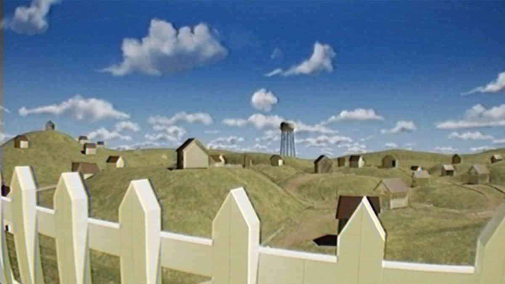
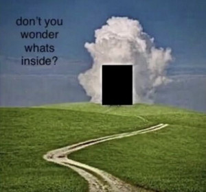
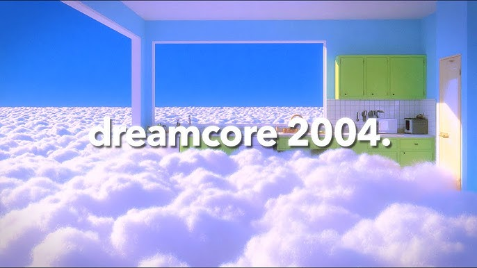
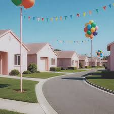
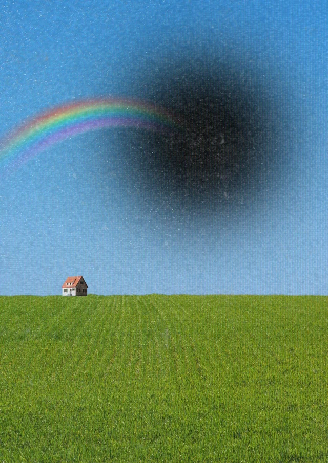

Dreamcore é uma estética contemporânea que se inspira na lógica dos sonhos e na forma como o cérebro processa imagens, memórias e emoções durante o estado onírico. Diferente de outros estilos visuais mais estruturados, o Dreamcore se baseia na fragmentação, na ambiguidade e na ausência de uma narrativa linear.
Dreamcore

As imagens associadas a essa estética costumam apresentar cenários aparentemente comuns, mas com alterações sutis que causam estranhamento. Pode ser uma iluminação incomum, um enquadramento estranho ou a presença de elementos fora de contexto. Muitas vezes, a qualidade da imagem é propositalmente reduzida, reforçando a sensação de lembrança ou registro impreciso.
Outro elemento importante são os textos curtos inseridos nas imagens. Frases simples, às vezes desconexas, podem provocar interpretações variadas. Elas não explicam — apenas sugerem. Essa característica contribui para o caráter subjetivo da experiência.

O Dreamcore também está fortemente ligado à nostalgia, mas não de forma direta. Em vez de evocar memórias específicas, ele recria a sensação de lembrar de algo sem conseguir definir exatamente o quê. Essa ambiguidade é uma das principais fontes de seu impacto emocional.

Do ponto de vista psicológico, essa estética dialoga com o funcionamento do inconsciente. Durante os sonhos, o cérebro combina referências de maneira livre, sem seguir regras lógicas rígidas. O Dreamcore tenta reproduzir esse processo no plano visual.

Mais do que um estilo artístico, o Dreamcore pode ser entendido como uma experiência sensorial. Ele não busca transmitir uma mensagem clara, mas sim provocar uma reação emocional no observador.

Ao interagir com esse tipo de conteúdo, o espectador é convidado a interpretar, sentir e, muitas vezes, se perder em suas próprias associações mentais.